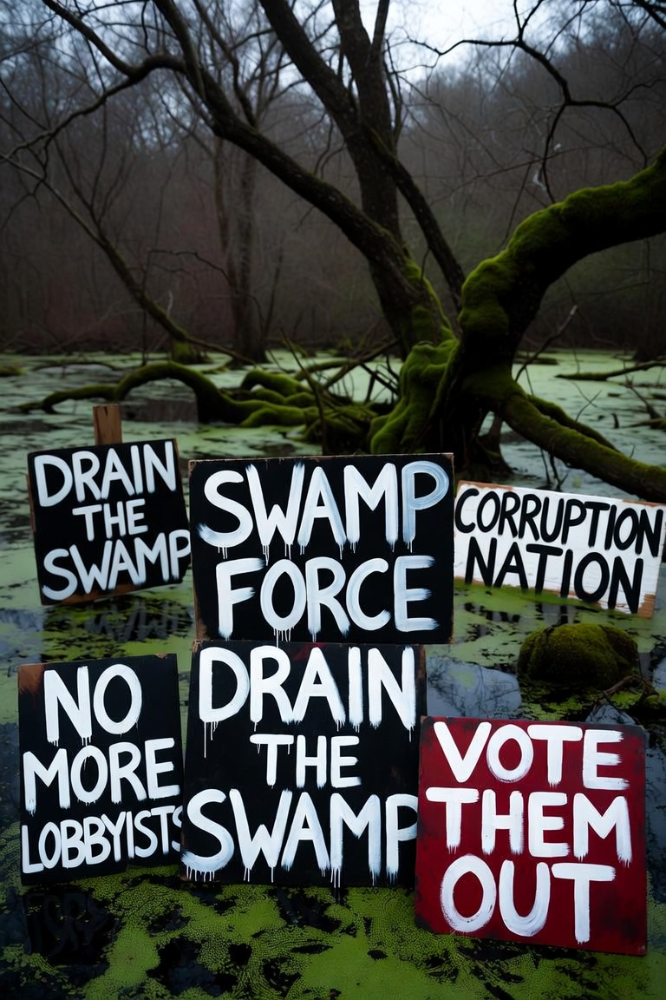

Journal · The Parties · Aug 30, 2026 · 30-second read
Why they hate Trump
southwest Border Patrol apprehensions in fiscal 2025, the lowest since 1970 (CBP)
CBP dataOpen the record ↗ ✓ Verified by SwampForce
The record Tap a card for the detail. Each one opens the source.
EIA: U.S. crude production hit a record 13.83 million barrels a day in 2026.EIA data
Oil: EIA’s September 2026 outlook has U.S. crude production at a record 13.83 million barrels a day this year, up from 13.66 million in 2025, about 18.5 percent of expected world output.
EIA dataOpen the record ↗The Laken Riley Act became Public Law 119-1 on January 29, 2025.Congress.gov
Laken Riley Act, Public Law 119-1 — signed January 29, 2025. Congress put its name on it.
Congress.govOpen the record ↗The Durham report.DOJ report
Durham report — DOJ
DOJ reportOpen the record ↗Read the full essay
The verified text, checked against primary records on Sep 24, 2026. Passages marked Our view are opinion.
Our view They loved the donor. They turned when he stopped writing checks and started closing the problems the political club lived on. Then came the hoaxes — on the taxpayer dime.
Our view They do not hate him because he is a saint. This journal has already printed the ugly sentences that are on tape, and it will print them again when they belong. They loved him when he was a donor — a businessman writing checks to the political club. That man was useful. That man was invited. Then he stopped being a donor and became a pragmatist about to solve the problems the club had created and lived on. The invitations ended. The plots began. Taxpayer money went into hoax after hoax: a Russia file the Durham report later gutted justice.gov ↗ two impeachments, overlapping cases that ate a campaign, a caption that never had to survive the recording. He was not supposed to get the job. Once he had it, they could not let the country conclude that the political club had never been magic.
Our view Hate, in this case, is a product. A newscast that never quite describes a statute still has a plot: he is the plot. Politicians who cannot pass a bill can always pass a monster. Platforms are paid when the feed stays mad. The people who cashed his checks when he was a donor did not become moralists overnight. They became a clientele whose business model was the problem he was trying to close. They are not primarily afraid of his manners. They are afraid of a public that stops needing them.
Our view He never wore the uniform. That is in the record. Then July 13, 2024, in Butler, Pennsylvania, when a rifle tried to close the argument and he stood back up. Another attempt on a golf course. Love of country is not a discharge paper. Sometimes it is a man who keeps showing up after the people with titles have explained that he should be gone.
What they are not talking about
A caption cannot hold a list. That is why they do not run one. Here is the work on paper. Congress passed some of it. All alone is a slogan. The roll call and the energy tables are the file.
- Oil: EIA’s September 2026 outlook has U.S. crude production at a record 13.83 million barrels a day this year, up from 13.66 million in 2025, about 18.5 percent of expected world output. That is not a tweet. It is the government’s own energy shop.
- The border as a border: CBP counted 237,538 southwest Border Patrol apprehensions in fiscal 2025, the lowest since 1970; Remain in Mexico in the first; catch-and-release treated as finished rather than as policy.
- Laken Riley Act, Public Law 119-1 — signed January 29, 2025. Congress put its name on it. congress.gov ↗
- USMCA replaced NAFTA in the first term. The political club called it theater until it was the law.
- Abraham Accords: Arab states and Israel recognized each other without waiting for a final-status sermon. No new American war in that term (our view).
- Three justices. The court is not a personality. It is a generation of cases.
- Qasem Soleimani, January 2020, Baghdad. A named Iranian commander paid a price the prior decade did not collect.
- Space Force. Recruiting treated as a mission this term rather than a branding problem.
- First term: energy exporter, not a lecture about scarcity. This term: the EIA record above.
Our view If a network spent a week on those lines the way it spends a week on a clipped sentence, the hate would have to compete with a file. That is the point of the hate. The next pages are the cases, the UN and the Taliban in his own words, and the January 6 docket versus the word that never made the indictment. We will not wash fight like hell. We will not pretend a caption is a conviction. They hate him because the list exists.
Receipts
- EIA — U.S. oil record 13.83 mbpd — eia.gov ↗
- Durham report — DOJ — justice.gov ↗